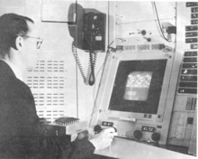

Ivan Sutherland est né le 16 mai 1938 à Hastings. Cet homme est américain et est un informaticien connu pour avoir été un pionnier de la création de l'Internet et aussi pour avoir crée le Sketchpad, l'ancêtre de la C.A.O (Conception Assistée par Ordinateur).
Ce dernier est donc surtout connu pour avoir crée le Sketchpad en 1963, dont il reçoit le Prix Turnig en 1988.
Le Sketchpad

Crée pour sa thèse de doctorat à la Massachusetts Institute of Technology, le Sketchpad est un programme crée pour l'ordinateur TX-0 et TX-2 pour tracer de la géométrie pour le dessin. Ce programme propose une interface graphique (une interface où les lignes de codes ne sont pas visibles, c'est le premier programme qui propose cette interface), qui grâce à un crayon optique et un moniteur, permet de modéliser dans trois dimensions (3D).
Ce qui fait de Sutherland un pionnier de la modélisation 3D, une chose qui est partout de nos jours (Infographie 3D, Films d'animation, Jeux vidéos, etc...). Mais aussi de la simulation visuelle, de l'interaction homme machine, et de l'interface graphique (on la voit aujourd'hui sur tout nos appareils numériques, sous le nom de G.U.I. : Graphical User Interface). Ce programme utilise des "objets" et des "instances", cela renvoie à la programmation orienté objet qui était qu'en cours de création.
Ceci est un exemple de gadgets dans une interface graphique.
En 1998, Sutherland obtient la médaille John von Neumann. Puis, il reçoit le Prix de Kyoto pour son travail sur le développement des capacités graphiques des ordinateurs et des interactions homme machine en 2012.
Il est membre de l'Académie des sciences des États-Unis dans la section 34 (informatique) depuis 1978. Lorsqu'il travaillait à l'Université d'Utah en 1968, il a participé avec David C. Evans (président) et Gary Watkins (directeur technique) à la création de la société Evans and Sutherland qui fut un leader mondial des simulateurs d'avions.
 Ceci est un exemple de gadgets dans une interface graphique.
Ceci est un exemple de gadgets dans une interface graphique.